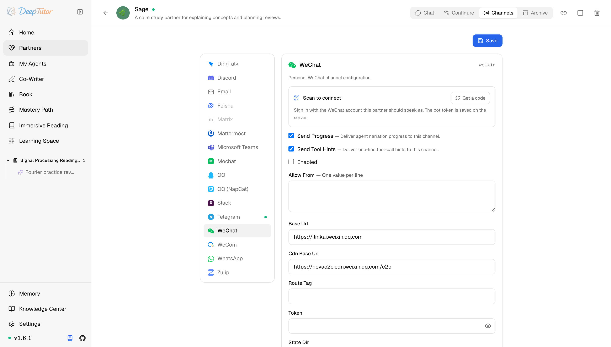

夥伴與管道個人微信
DeepTutor 接入個人微信教學！5 步掃描 QR Code 搞定，普通微信帳號秒變 AI 助手，香到不行！
使用掃描 QR Code 登入和 HTTP long-poll 為 Partner 設定個人微信管道。
原文連結：https://docs.deeptutor.info/zh-cn/partners/weixin/
微信應該是大家用得最多的聊天工具，沒有之一。能不能把 DeepTutor 的學習夥伴（Partner）直接裝進個人微信？最近問這個的朋友特別多。
答案是：能。DeepTutor 的 weixin 管道，用 iLink 長輪詢（long-poll）API 把 Partner 接到你的個人微信帳號上，瀏覽器裡生成 QR Code，掃描 QR Code 登入就能用，預設輪詢逾時 35 秒，多數網路環境直接可用。
很多人一聽"個人微信沒有官方機器人（bot）後台"，基本就放棄了。
但是別忘了，這條路 DeepTutor 已經幫你蹚平了：不用去任何開放平台申請憑證，掃描 QR Code 就行，普通微信帳號也能當 AI 入口，這體驗，絕了。
接下來，我們用 5 步完成掃描 QR Code 登入，把它跑起來。

它和 WeCom 企業微信不是一回事：普通個人微信看本頁，企業微信 / WeChat Work 看 WeCom。
卡片同時負責設定與執行反饋：在其中生成並掃描 QR Code，觀察 Waiting for scan 變成 Connected，無需依賴終端機 QR Code。
一、安裝依賴
個人微信支援包含在 Partners 可選元件（extras）裡；瀏覽器 QR Code 渲染還會用到 qrcode。
pip install -e ".[partners]"
# 或发布包支持 extras 时：
pip install "deeptutor[partners]"二、設定管道卡片（channel card）
開啟 Partners -> 你的 partner -> Channels -> WeChat。
| 欄位 | 怎麼填 |
|---|---|
| Send Progress | 測試時建議開啟。長任務會把過程解說（narration）發到微信。 |
| Send Tool Hints | 除錯時建議開啟；如果不想讓使用者看到一行工具呼叫，生產環境可關閉。 |
| Enabled | 準備登入/啟動時再開啟。 |
| Allow From | 一行一個值。測試可填 * 表示開放；上線後換成具體微信使用者 id。空列表通常表示拒絕所有人。 |
| Base Url | 預設 https://ilinkai.weixin.qq.com ，一般不用改。 |
| Cdn Base Url | 預設 https://novac2c.cdn.weixin.qq.com/c2c ，用於媒體上傳/下載。 |
| Route Tag | 可選騰訊路由標籤。沒有特殊部署要求就留空。 |
| Token | 可選 bot token。掃描 QR Code 登入時留空；掃描 QR Code 成功後管道會儲存 token。 |
| State Dir | 可選狀態目錄。留空時使用 data/partners/ |
| Poll Timeout | 長輪詢逾時時間，單位秒。預設 35 ，多數網路可用。 |
三、登入流程
- 先不要啟動 Partner，開啟它的 WeChat 管道卡片，並把 Token 留空。
- 點 Scan to connect ，QR Code 會直接顯示在瀏覽器裡。
- 用微信掃描 QR Code 並在手機上確認。這一步只把 bot token（以及伺服器端回傳的 base URL）寫進管道設定，不會啟動 Partner，也不會開始長輪詢。
- 確認 Enabled 已開啟，再從 UI 或命令列工具（CLI）啟動 Partner。管道會載入剛儲存的 token，然後開始長輪詢。
- 用允許的帳號發一條短訊息測試。無 token 時直接啟動管道仍會在終端機列印 QR Code 作為備援，但推薦先在瀏覽器完成掃描 QR Code，再啟動 Partner。
deeptutor partner start <partner-id>如果 QR Code 過期，點 New code（或重新啟動 partner）後掃新的那張。實現會自動重新整理幾次 QR Code，但登入必須人工掃描 QR Code 完成。
如何確認健康
健康的 WeChat 管道通常有三個跡象：
- 掃描 QR Code 結果提示 bot token 已儲存，並且帳號狀態已經寫入；
- 掛載的
data/目錄裡存在data/partners/<partner-id>/channels/weixin/account.json； - 允許的傳送者發一條短訊息後，Partner 能正常回復。
Docker（容器部署工具）部署必須持久化 data/partners/，否則每次容器重新啟動都可能需要重新掃描 QR Code。
訪問控制
訊息進入 partner brain 之前會先檢查 Allow From。第一次測試填 * 可以；生產環境建議從日誌裡確認 sender id 後換成明確白名單（allowlist）。
常見問題
每次啟動都要求重新掃描 QR Code
檢查 State Dir 是否可寫、是否持久化。留空時 DeepTutor 寫到 Partner 的 channels/weixin/ 目錄；如果 Docker 沒掛載該目錄，重新啟動後 token 會丟失。
收得到訊息但回不了
微信回覆依賴最近入站訊息帶來的 context_token。如果帳號空閒太久，先從微信發一條新訊息，讓 DeepTutor 重新整理 context 後再回復。
過程訊息太多
在管道卡片裡關閉 Send Progress 或 Send Tool Hints。這不會改變 partner 推理，只改變微信裡看到的投遞內容。
部署過程遇到問題，歡迎在留言區留言，把報錯的完整日誌貼出來，我看到會回覆。